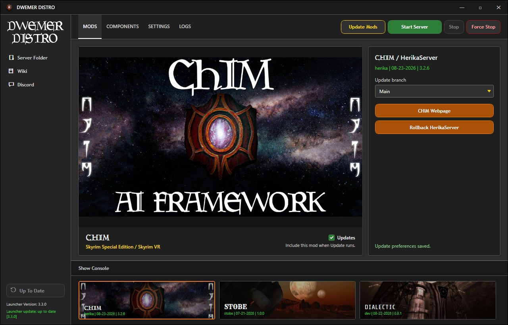
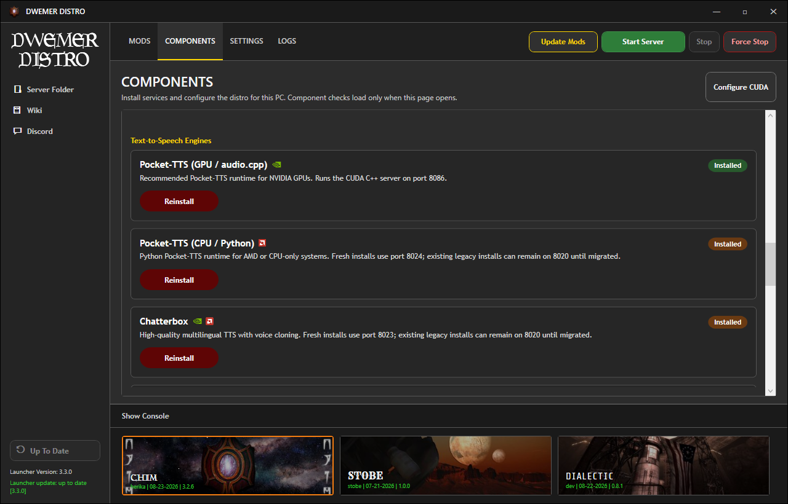
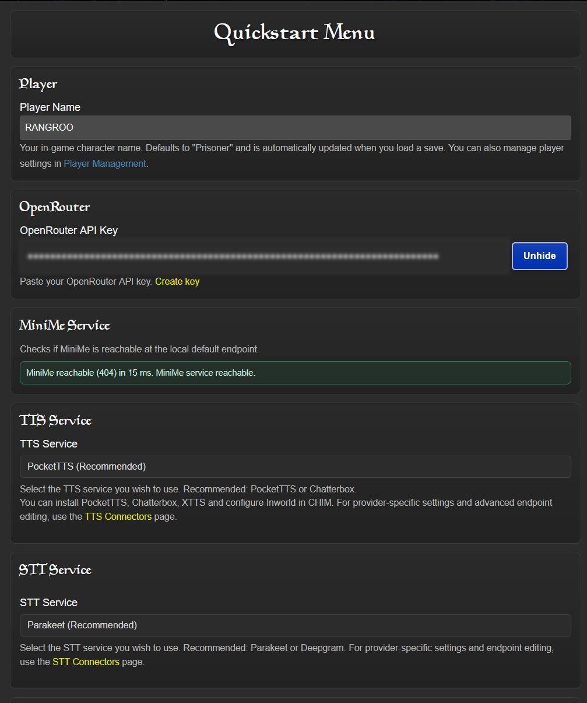

Open Control Panel - Programs and Features, and click Turn windows features on or off.
Control Panel - Programs and Features - Turn Windows features on or off
Ensure you have Virtual Machine Platform, Windows Hypervisor Platform, and Windows Subsystem for Linux enabled.
Ensure these features are enabled.For Windows 11 Windows Hypervisor Platform may just be called Hyper-V.
Restart your PC.
Download the DwemerDistro from the mod page.
Extract the .exe anywhere on your PC.
Run the DwemerDistroInstaller.exe.
Simply follow the installation guide and wait for it to finish.
Leave Create desktop shortcut enabled, then click finish once it is complete.
Run the DwemerDistro.exe shortcut on your desktop.
Why does Windows Defender say it's a virus? Are you trying to hack me!
No we are not!
Most anti virus programs automatically untrust and false flag less popular .exes.
We have all the source code to the launcher on our GitHub. If you know Python you can compile it yourself.
The launcher has four tabs along the top: MODS, COMPONENTS, SETTINGS, and LOGS.
Update the launcher first. The update button sits in the bottom-left corner of the launcher and reads Update Launcher when an update is waiting, or Up To Date when there is nothing to install.
If it did update, wait for the launcher to restart before carrying on.
Open the MODS tab, select CHIM, and make sure the Updates checkbox next to it stays ticked. That checkbox is what includes CHIM when updates run.
Click Update Mods in the top bar and wait for it to finish.

The MODS tab with CHIM selected. Keep CHIM's Updates checkbox ticked, then click Update Mods in the top bar. The button in the bottom-left corner updates the launcher itself, and reads Up To Date when no launcher update is available.
Open the COMPONENTS tab in the top bar. It opens as a page inside the launcher window, not as a separate popup, and the list scrolls, so keep scrolling to see every component.
Find a component you want and click the button on its card. That button reads Install when the component is not on your PC yet, and Reinstall when it is already installed.
Let each install finish before starting the next one.

The COMPONENTS tab is a scrollable page inside the launcher. A component's button reads Install the first time and Reinstall afterwards, which is why every button reads Reinstall on the already-configured PC shown here.
Component Installation Guide:
If you have a powerful NVIDIA GPU install CUDA, Minime&TXT2VEC (GPU) & Chatterbox.
If you have a less powerful NVIDIA GPU install CUDA, Minime&TXT2VEC (GPU) & Pocket-TTS (GPU).
If you have an AMD GPU, download Minime&TXT2VEC (CPU) & Pocket-TTS (CPU).
For Pocket TTS and Chatterbox you must setup a Hugging Face account and accept the terms of service for it here:
Access Token Creation. Make sure it has Read access!
Once ready, click Start Server in the top bar.
Your default web browser should open a new tab taking you to the Dashboard.
If no tab opens, go back to the MODS tab, select CHIM, and click CHIM Webpage. If the server is stopped, the launcher asks whether to start it and opens the page once the server is ready.
CHIM Profile Setup
Fill out the QUICKSTART menu:
Enter your Character name.
Paste in your OpenRouter API key if you are using OpenRouter.
Choose Text-to-Speech.
Choose Speech-to-Text.

Click Save.
OpenRouter is optional. To use another provider directly, save the rest of QuickStart and follow Use Your Own LLM Provider.
Make sure it is towards the bottom of your mod organizer.
Now you are ready to play!
Update Note
For updating the mod you usually only need to open the DwemerDistro launcher, select CHIM on the
MODS tab with its Updates checkbox ticked, click Update Mods in the top bar, and install
the latest AIAgent mod from Nexus. You do not need to reinstall the DwemerDistro unless we explicitly say so.